105_104001003108D900_tile_51
同一原生输入 77×29 → 固定 20 倍输出 1540×580。三张图的视野、尺寸和八方向融合方式一致。

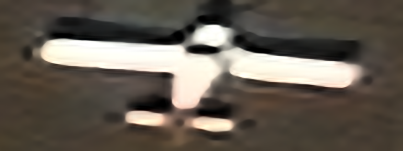
左侧：所选微调模型；右侧：旧模型。B 的选中权重与旧模型逐张量相同，因此共用旧模型图。
A 保留完整训练画面；B 在相同画面上增加受控模糊和噪声；B＋LoRA 使用 B 的数据，仅更新 27,012 个适配参数。全参数微调为 281,233 个参数。三组从同一旧权重出发，按验证集选择检查点，旧权重也参与候选。
这里比较此前固定选择的 15 张真实飞机，每个数据集 5 张，使用相同的原生裁剪输入。新增 A、LoRA 共 30 次推理；B 选回第 0 步，其张量与旧模型完全相同，复用旧模型输出。该诊断不等同于全数据集已经用新模型重跑。
下表仅来自有清晰参考的合成配对数据。训练使用 480 个原始来源，验证和测试各 60 个独立来源，每个来源分别测试干净与模糊噪声两种退化。验证按两种退化平均 PSNR 选权重；测试集不参与选权重。单位 dB，括号为相对旧模型的变化。
| 模型 | 选中步数 | 验证平均变化 | 干净测试 PSNR | 退化测试 PSNR |
|---|---|---|---|---|
| 旧模型 / B 组选回旧权重 | 0 | +0.0000 | 21.7036 (+0.0000) | 20.9258 (+0.0000) |
| A · 完整画面微调 | 1500 | +0.0083 | 21.7112 (+0.0076) | 20.9369 (+0.0111) |
| B＋LoRA · 退化适配 | 500 | +0.0090 | 21.6767 (-0.0269) | 20.9723 (+0.0465) |
A 的测试指标小幅上升；LoRA 在退化测试上上升，在干净测试上下降。两者平均增益均不足 0.01 dB，不能据此宣称显著改善。真实公开飞机没有对应高分辨率真值，下方图片不报告 PSNR/SSIM。A 与历史训练还存在固定20倍训练调度等变化，不能将全部差异归因于画面取样。
逐张查看这 15 张固定样例，尚未观察到明显的整机轮廓或细节改善，PlanesNet 的模糊仍然存在。这是本组样例的视觉观察，不是全数据集的质量结论。
页面长边最多 800 像素；完整原生输出保存在服务器。不会把 20 倍输出尺寸等同于 20 倍真实空间分辨率。
CosmiQ Works 与 AI.Reverie；Jacob Shermeyer 等，RarePlanes: Synthetic Data Takes Flight，2020。真实影像来自 Maxar WorldView-3。2026-09-21 从 AWS Open Data 获取。 数据来源；CC BY-SA 4.0；本栏目中经超分、裁剪和缩略的衍生图片同样采用此许可。本栏裁剪、超分和缩略衍生图保留相应许可。
同一原生输入 77×29 → 固定 20 倍输出 1540×580。三张图的视野、尺寸和八方向融合方式一致。

左侧：所选微调模型；右侧：旧模型。B 的选中权重与旧模型逐张量相同，因此共用旧模型图。
同一原生输入 78×69 → 固定 20 倍输出 1560×1380。三张图的视野、尺寸和八方向融合方式一致。
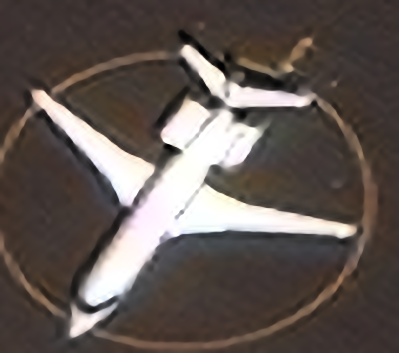
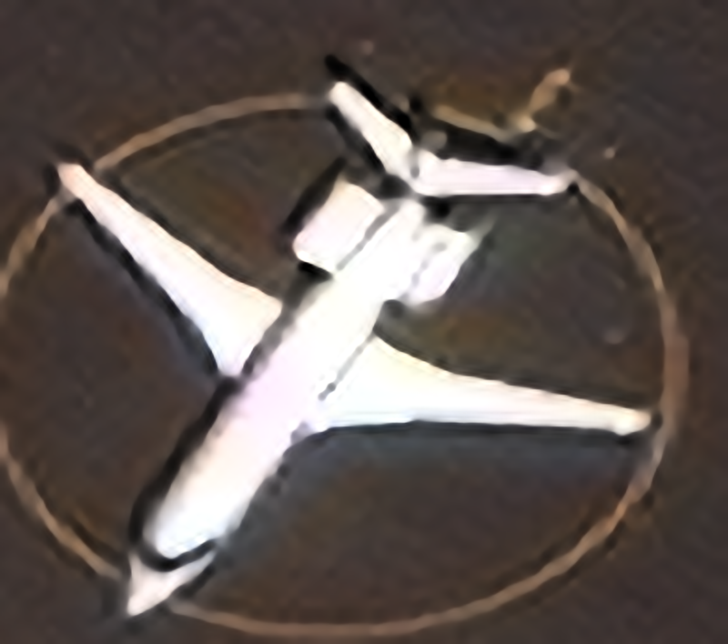
左侧：所选微调模型；右侧：旧模型。B 的选中权重与旧模型逐张量相同，因此共用旧模型图。

同一原生输入 167×181 → 固定 20 倍输出 3340×3620。三张图的视野、尺寸和八方向融合方式一致。

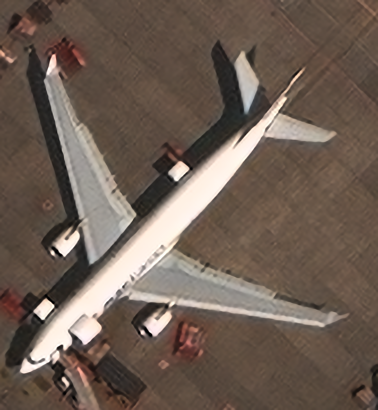
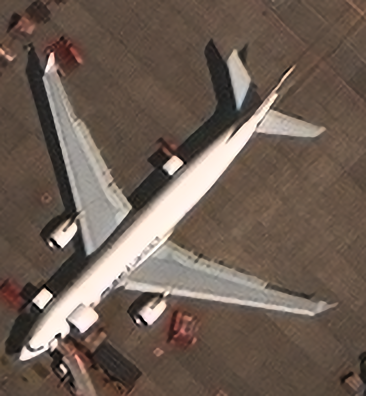
左侧：所选微调模型；右侧：旧模型。B 的选中权重与旧模型逐张量相同，因此共用旧模型图。

同一原生输入 173×159 → 固定 20 倍输出 3460×3180。三张图的视野、尺寸和八方向融合方式一致。
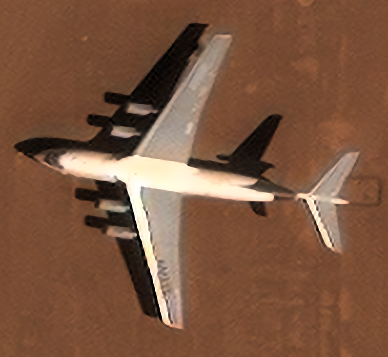
左侧：所选微调模型；右侧：旧模型。B 的选中权重与旧模型逐张量相同，因此共用旧模型图。
同一原生输入 250×229 → 固定 20 倍输出 5000×4580。三张图的视野、尺寸和八方向融合方式一致。

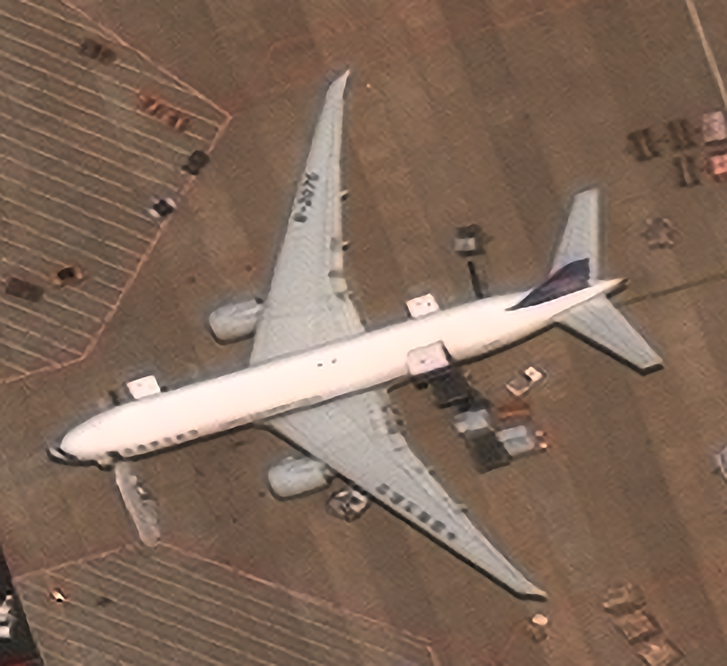
左侧：所选微调模型；右侧：旧模型。B 的选中权重与旧模型逐张量相同，因此共用旧模型图。

Gong Cheng、Junwei Han、Xiaoqiang Lu；Remote Sensing Image Scene Classification: Benchmark and State of the Art，Proceedings of the IEEE，2017。 数据来源；CC BY-NC 4.0，仅供非商业研究展示。本栏裁剪、超分和缩略衍生图保留相应许可。
同一原生输入 103×97 → 固定 20 倍输出 2060×1940。三张图的视野、尺寸和八方向融合方式一致。
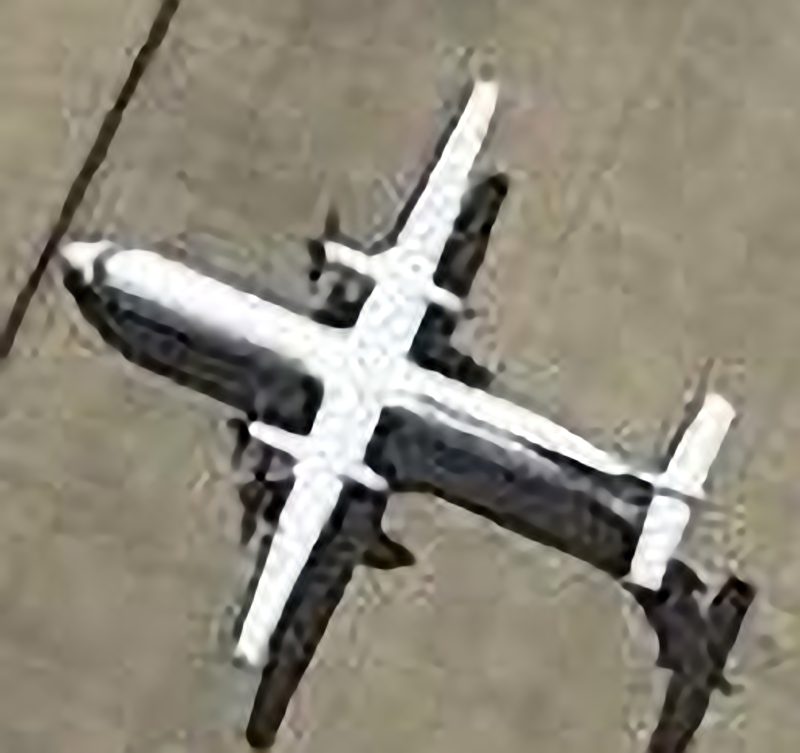
左侧：所选微调模型；右侧：旧模型。B 的选中权重与旧模型逐张量相同，因此共用旧模型图。
同一原生输入 89×81 → 固定 20 倍输出 1780×1620。三张图的视野、尺寸和八方向融合方式一致。
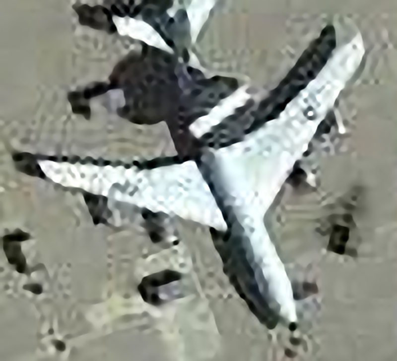
左侧：所选微调模型；右侧：旧模型。B 的选中权重与旧模型逐张量相同，因此共用旧模型图。

同一原生输入 138×114 → 固定 20 倍输出 2760×2280。三张图的视野、尺寸和八方向融合方式一致。
左侧：所选微调模型；右侧：旧模型。B 的选中权重与旧模型逐张量相同，因此共用旧模型图。
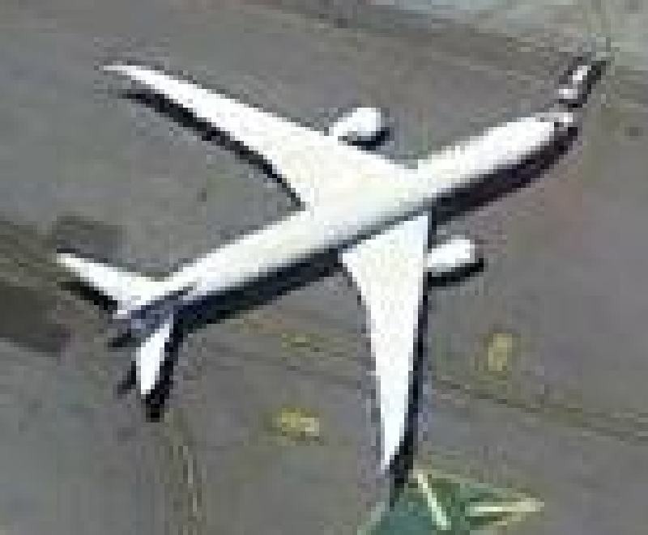
同一原生输入 100×106 → 固定 20 倍输出 2000×2120。三张图的视野、尺寸和八方向融合方式一致。

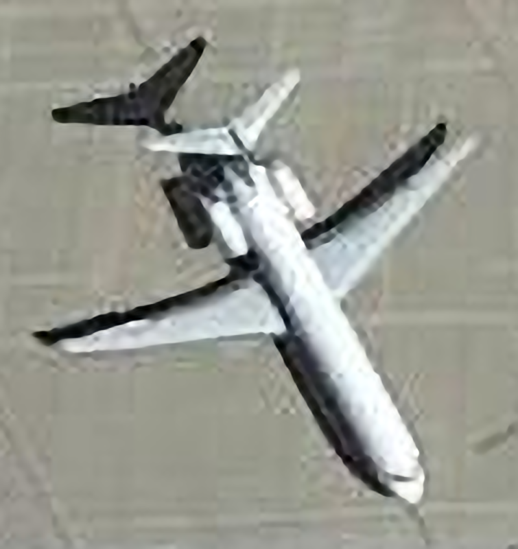
左侧：所选微调模型；右侧：旧模型。B 的选中权重与旧模型逐张量相同，因此共用旧模型图。

同一原生输入 78×80 → 固定 20 倍输出 1560×1600。三张图的视野、尺寸和八方向融合方式一致。
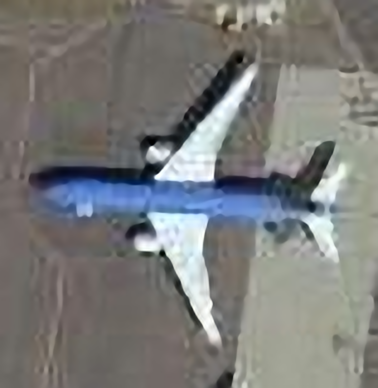
左侧：所选微调模型；右侧：旧模型。B 的选中权重与旧模型逐张量相同，因此共用旧模型图。
Bob Hammell（rhammell）；Planet Open California / PlanetScope。 数据来源；CC BY-SA 4.0。本栏裁剪、超分和缩略衍生图保留相应许可。
同一原生输入 18×16 → 固定 20 倍输出 360×320。三张图的视野、尺寸和八方向融合方式一致。
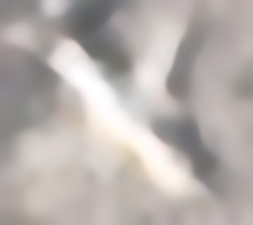
左侧：所选微调模型；右侧：旧模型。B 的选中权重与旧模型逐张量相同，因此共用旧模型图。

同一原生输入 20×20 → 固定 20 倍输出 400×400。三张图的视野、尺寸和八方向融合方式一致。
左侧：所选微调模型；右侧：旧模型。B 的选中权重与旧模型逐张量相同，因此共用旧模型图。
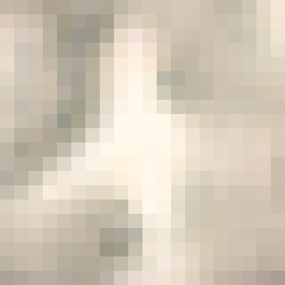
同一原生输入 20×20 → 固定 20 倍输出 400×400。三张图的视野、尺寸和八方向融合方式一致。

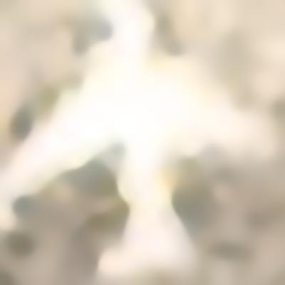
左侧：所选微调模型；右侧：旧模型。B 的选中权重与旧模型逐张量相同，因此共用旧模型图。
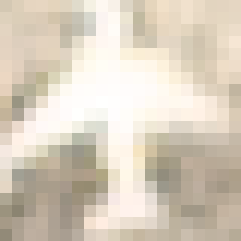
同一原生输入 15×16 → 固定 20 倍输出 300×320。三张图的视野、尺寸和八方向融合方式一致。

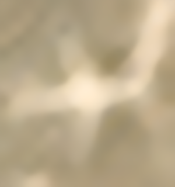
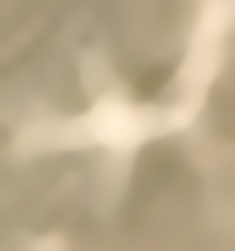
左侧：所选微调模型；右侧：旧模型。B 的选中权重与旧模型逐张量相同，因此共用旧模型图。

同一原生输入 20×20 → 固定 20 倍输出 400×400。三张图的视野、尺寸和八方向融合方式一致。
左侧：所选微调模型；右侧：旧模型。B 的选中权重与旧模型逐张量相同，因此共用旧模型图。